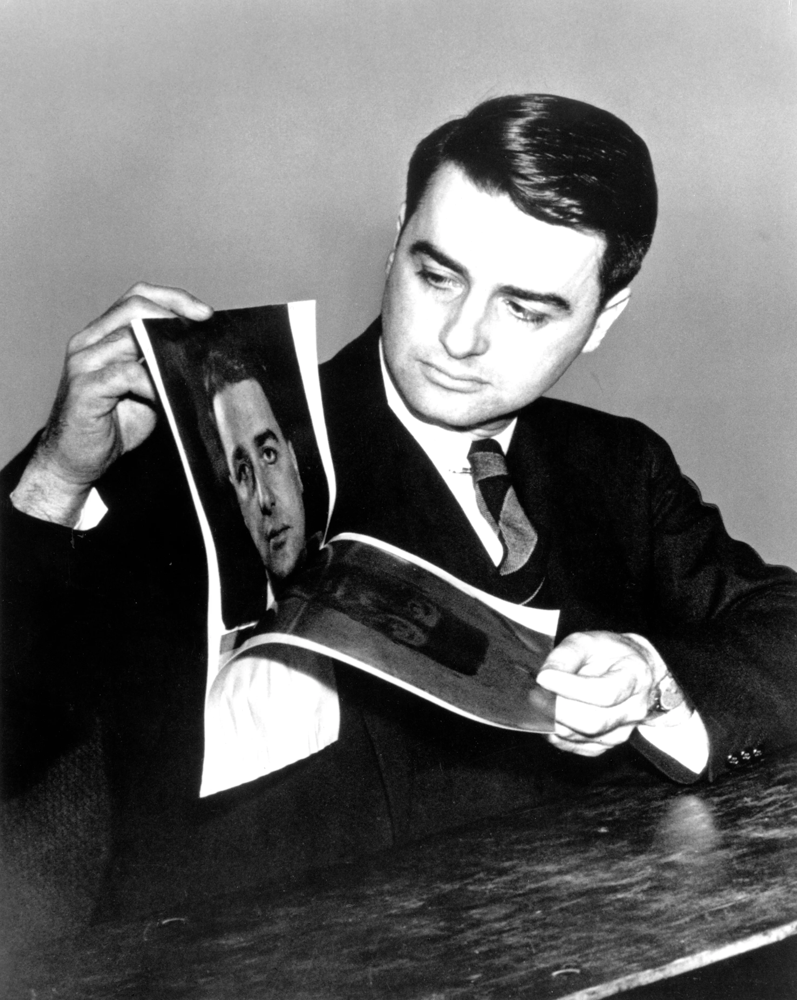

Naomi’s INK is a small creative brand dedicated to bringing the charm of instant photography. We curate Polaroid cameras, films, and accessories that help you capture real moments in a simple, nostalgic, and meaningful way.
The Creator


Edwin Herbert Land, ForMemRS, FRPS, Hon.MRI was an American scientist and inventor, best known as the co-founder of the Polaroid Corporation. He invented inexpensive filters for polarizing light, a practical system of in-camera instant photography, and the retinex theory of color vision, among other things. Read more..